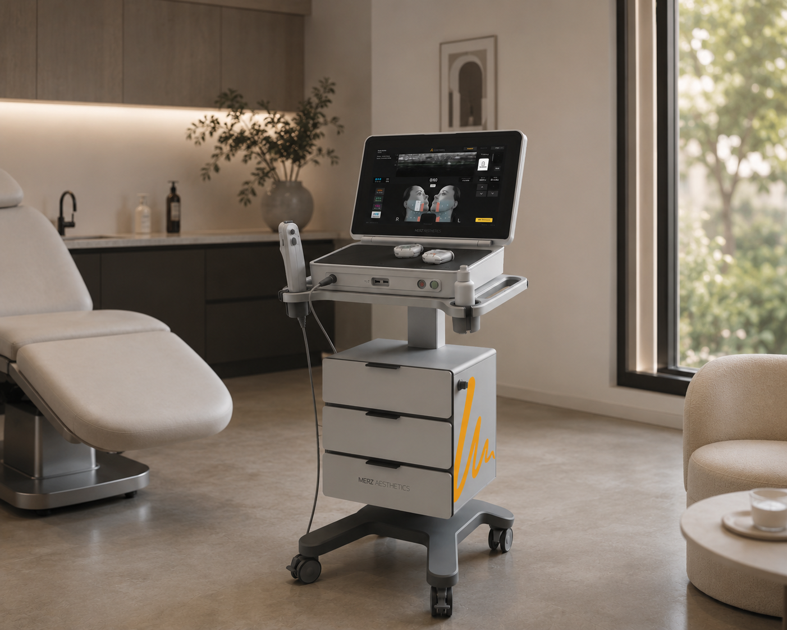
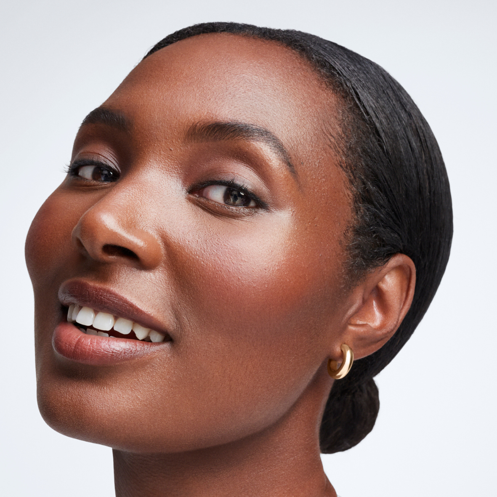
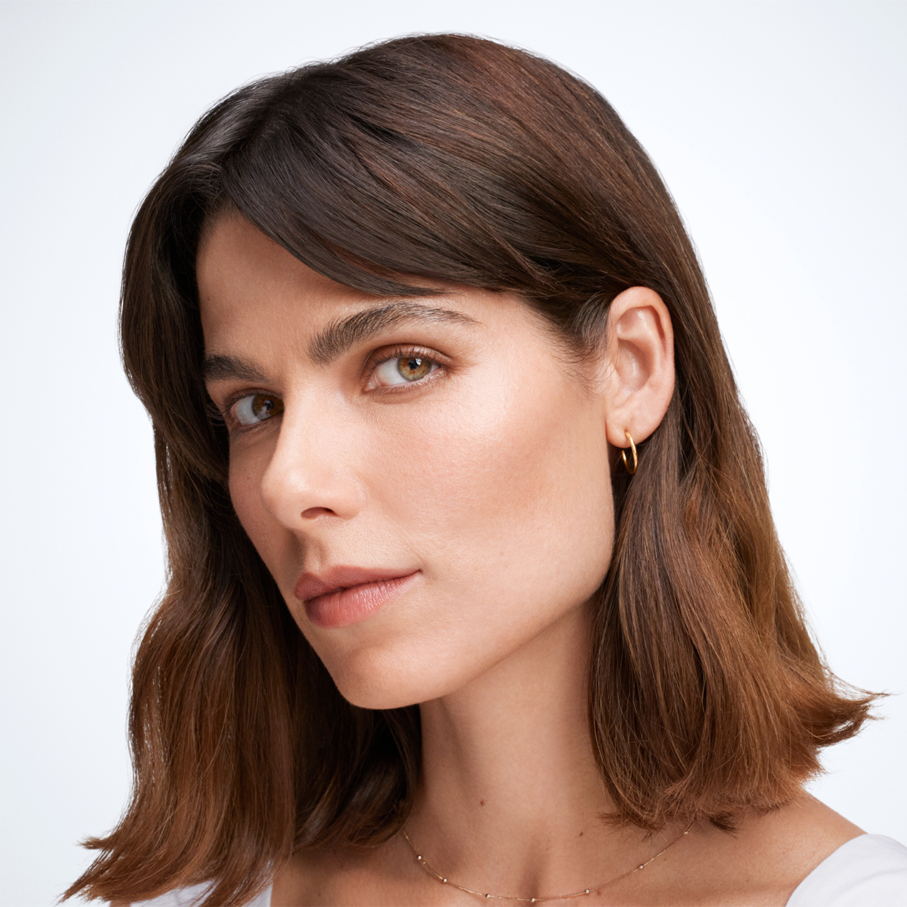
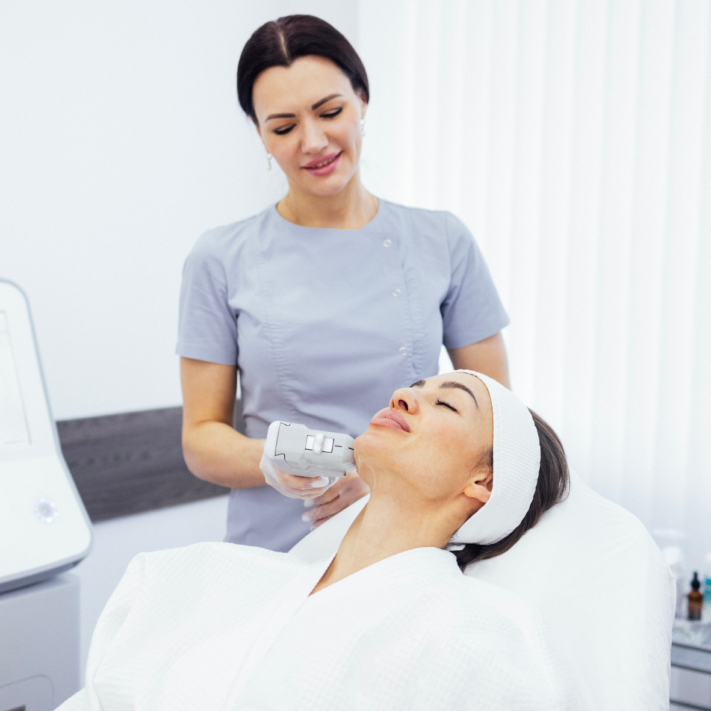
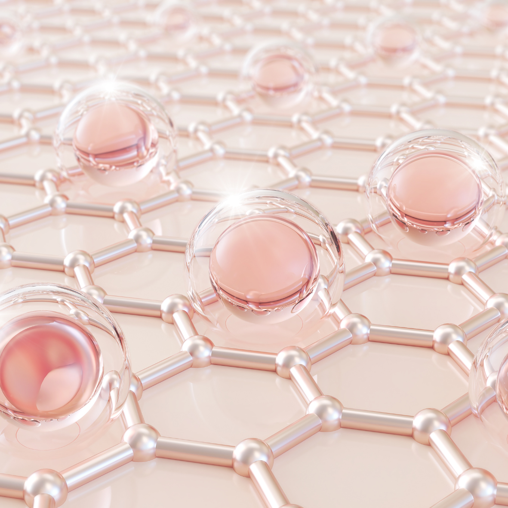
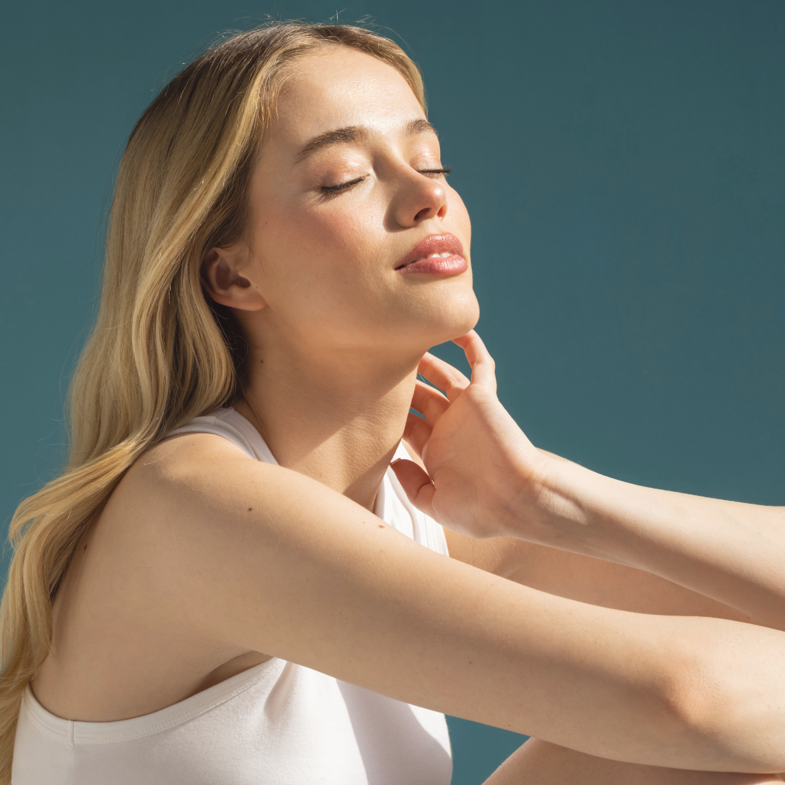
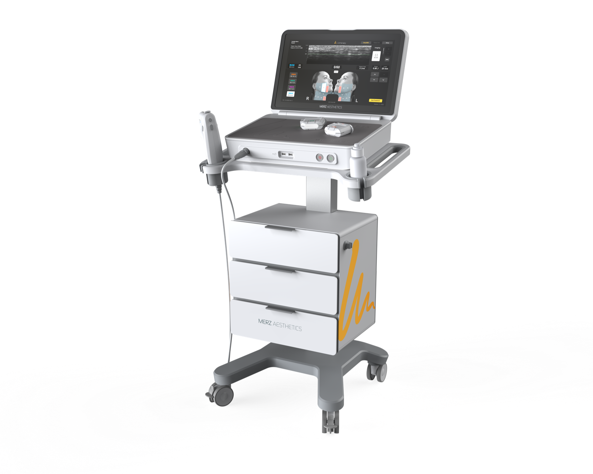

Un lifting visible,
sans chirurgie1,2
Trouvez Ultherapy® PRIME près de chez vous
Ultherapy® PRIME, maintenant pour le corps Nouveau
En savoir plusUne technologie non invasive pour raffermir et redéfinir le visage et le corps.
Ultherapy® PRIME stimule la production naturelle de collagène et d'élastine en profondeur, là où le relâchement s'installe.
Les résultats sont naturels3,4, progressifs et durables, et peuvent être visibles jusqu'à un an ou plus.*

Pour les premiers signes de relâchement cutané8,9 des 35-40 ans
Pour les grades de laxité léger à modéré
Sans chirurgie, ni injection1,2

Pour tous les phototypes1,5,6,7

Traitement personnalisé1,5,6

Une seule séance5
Sans interruption de votre vie sociale5
Résultat durable jusqu'à 1 an ou plus*

Stimule la production de collagène
Rides lissées, peau plus ferme & contours définis
Pas de saisonalité

Apparence naturelle3,4
* Les résultats s'améliorent en 90 à 180 jours et peuvent durer jusqu'à un an.1,3,4,5,6,7
Avant / Après
Glissez le curseur pour voir les résultats.
HAUT DU VISAGE, BAS DU VISAGE ET COU
APRÈS 3 MOIS
ABDOMEN
APRÈS 3 MOIS
BAS DU VISAGE ET COU
APRÈS 3 MOIS
Corps
Retrouvez une peau ferme et tonique sur les bras et ventre en stimulant la production de collagène et d'élastine là où votre peau en a besoin.
Après une grossesse, une perte de poids, la ménopause : le relâchement s'installe différemment.
Ultherapy® PRIME cible désormais le ventre et les bras pour raffermir ce qui a changé.
Visage & cou
Redessiner l'ovale, sculpter le bas du visage, rehausser le sourcil, lisser les ridules du cou : Ultherapy® PRIME accompagne chaque détail.

Protocole sur-mesure
Chaque patient est unique : l'épaisseur et la profondeur des différentes couches de la peau peuvent varier d'une zone à l'autre et d'une personne à une autre.
Votre traitement
De la consultation jusqu'au résultat : voici ce qui se passe, étape par étape.
Une consultation médicale permet d'évaluer votre peau, les zones à traiter et de définir une prise en charge personnalisée.
Après nettoyage de la peau, le médecin applique un gel échographique. Grâce à la visualisation échographique en temps réel, Ultherapy® PRIME permet de cibler précisément les tissus profonds, sans effraction cutanée, pour stimuler le processus de production de collagène. La sensation pendant la séance varie selon les patients.
Après la séance
Un premier résultat peut être visible grâce à l'effet de contraction des fibres. Vous pouvez ressentir de légers picotements ou des rougeurs selon votre sensibilité, mais ces effets sont temporaires et disparaissent en quelques heures, sans impact sur le quotidien. Votre médecin pourra vous informer sur d'éventuels effets secondaires plus rares.
Après 3 mois
Les résultats sont visibles et progressifs. Certains patients peuvent voir leurs résultats évoluer jusqu'à 6 mois.
Après 1 an
Les résultats restent visibles et harmonieux.
*Données issues d'une étude prospective portant sur 20 patients, réalisée avec Ultherapy®
FAQ
Tout ce que vous voulez savoir avant de consulter : le déroulement d'une séance, ce que vous ressentirez, et à quoi vous attendre dans les semaines qui suivent.
Trouver un praticien
Trouvez un centre esthétique ou un praticien de médecine esthétique près de chez vous qui propose des traitements Ultherapy® et Ultherapy® PRIME, pour un lifting sans chirurgie du visage (haut du visage, bas du visage) et/ou du corps (cou, décolleté, face postérieure et antérieure des bras, abdomen).
Entrez votre code postal dès maintenant pour localiser les centres proposant Ultherapy® PRIME autour de vous.
La technologie
Comment ça fonctionne ?
Ultherapy® PRIME repose sur la technologie HIFU
(High-Intensity Focused Ultrasound), des ultrasons microfocalisés capables de cibler avec précision les couches profondes de la peau, jusqu'à 4,5 mm de profondeur.
Les brèves augmentations de température, envoyées à la profondeur précise requise, relancent le processus de cicatrisation de votre corps pour créer du nouveau collagène : un phénomène appelé la néocollagénèse.